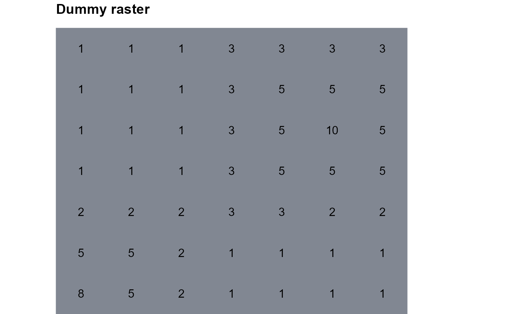
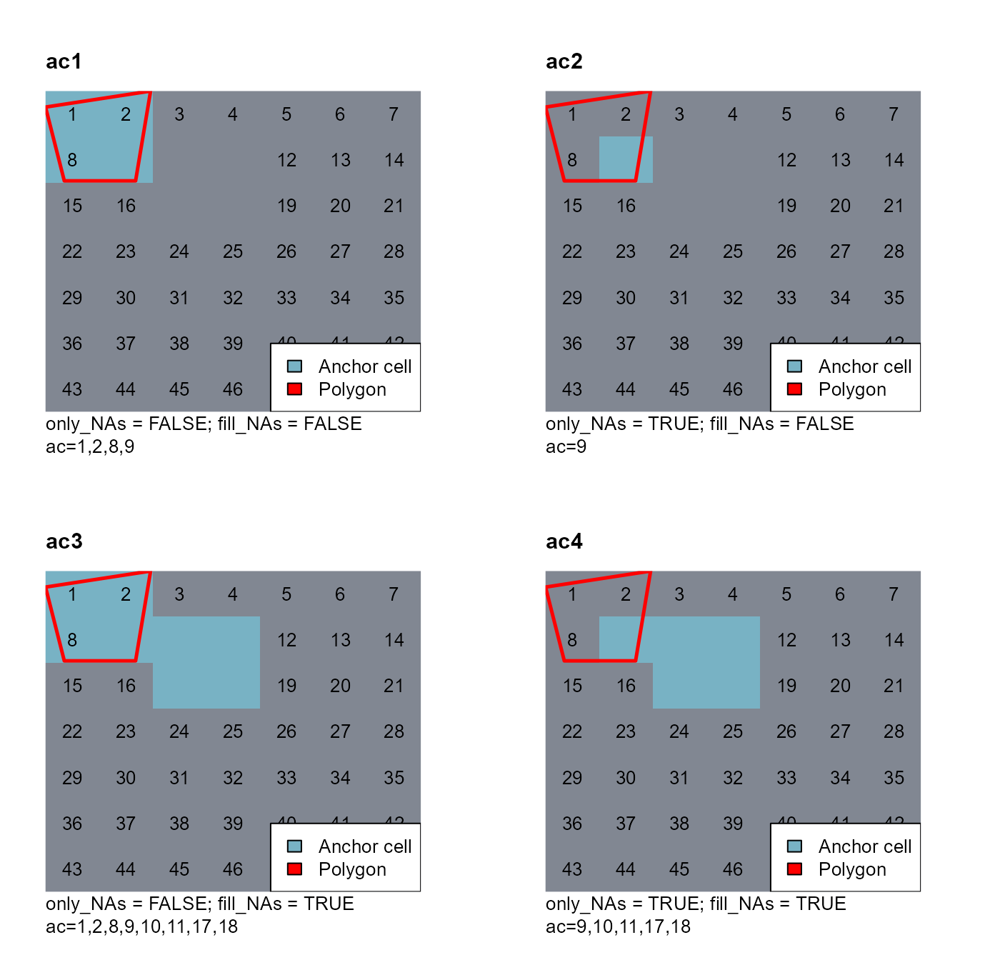
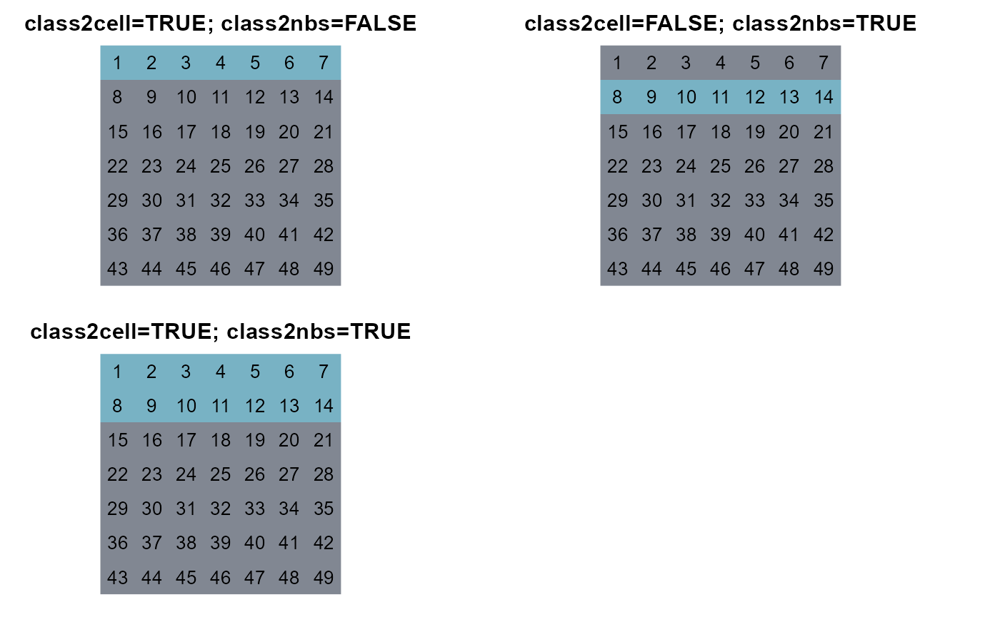
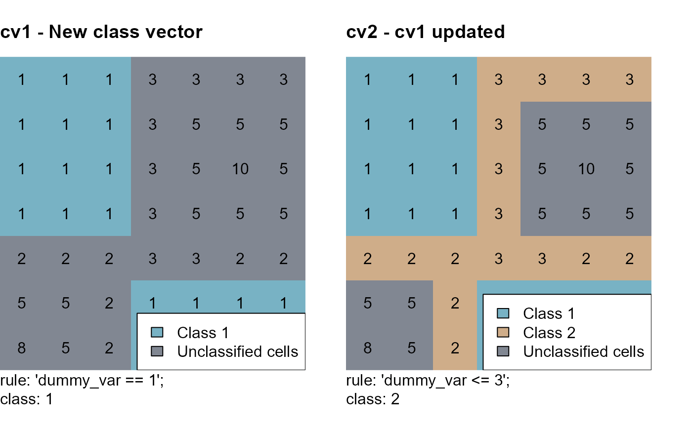
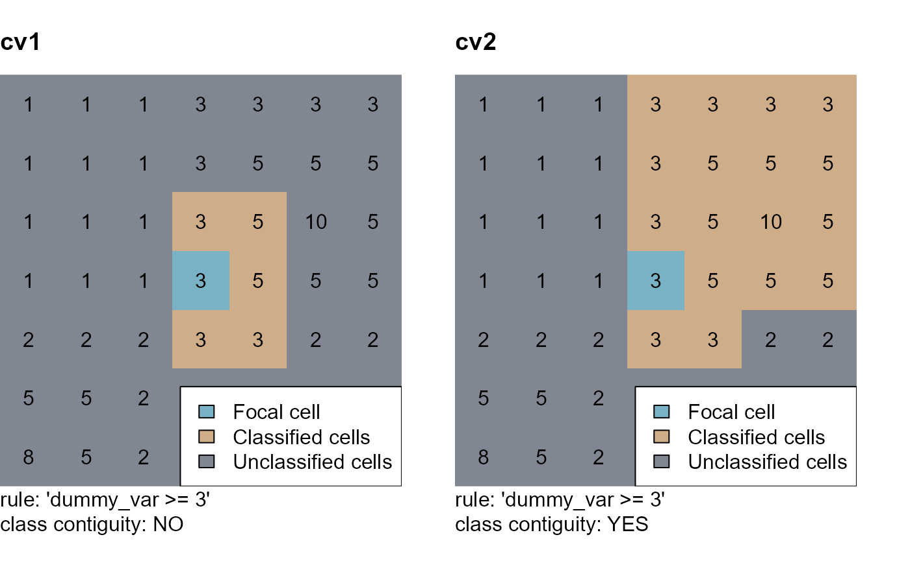
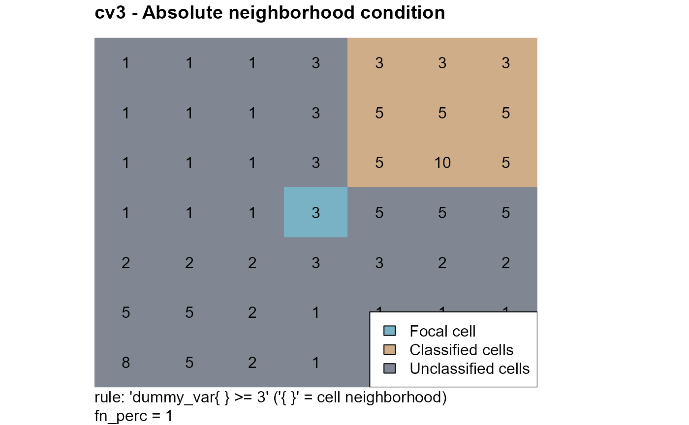
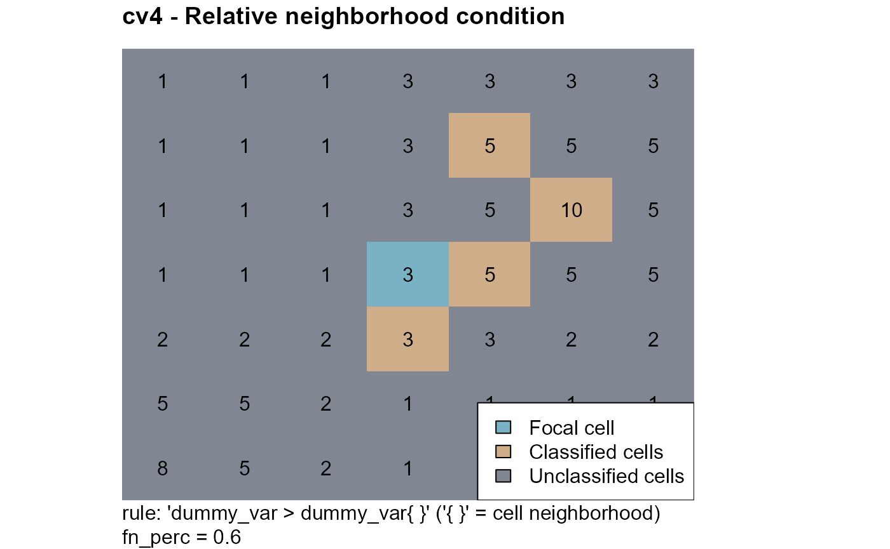
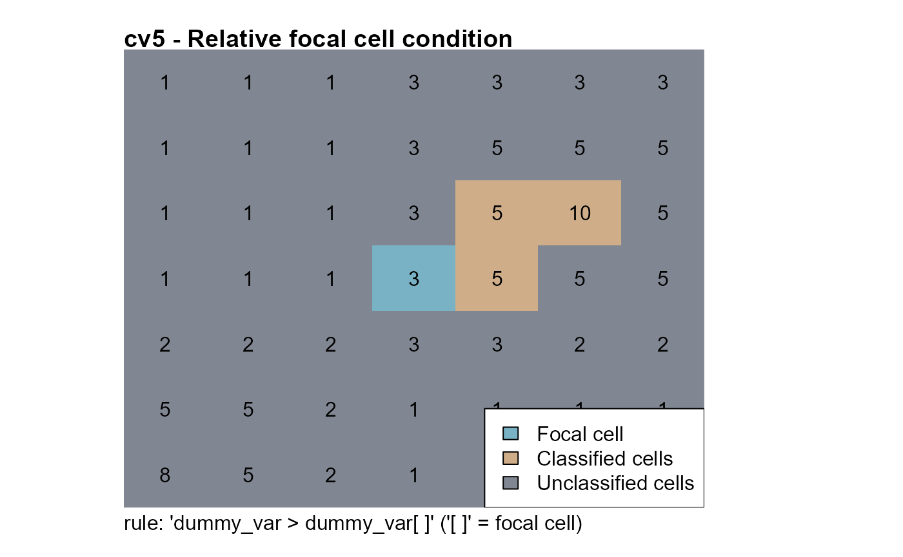
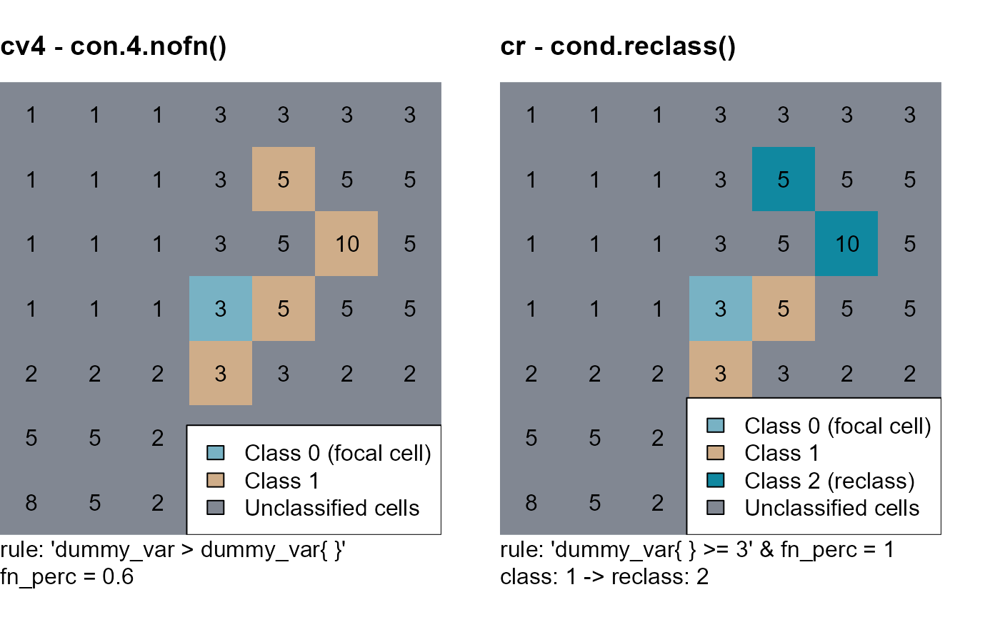
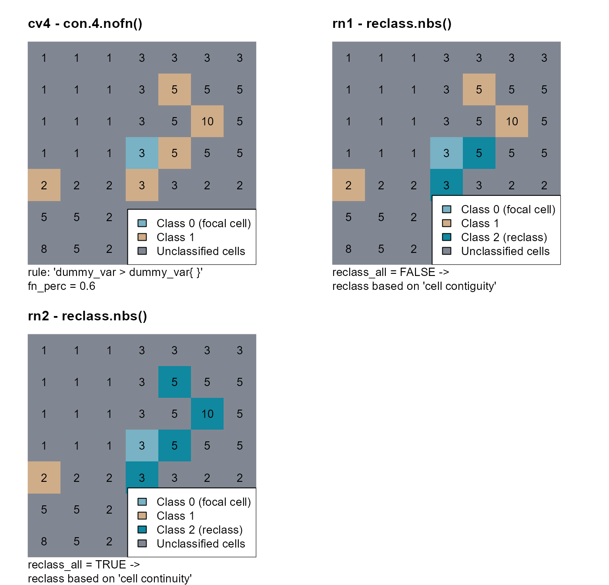

vignettes/articles/scapesClassification_01_4_ClassFunctions.Rmd
scapesClassification_01_4_ClassFunctions.RmdClass vectors serve both as function input and output.
They store function classifications by mapping raster cells to numeric classes (or to NA-values if no class is attributed).
The nth element of a class vector corresponds to the raster cell stored in the nth row of the attribute table.
As inputs, they provide information about what cells have been classified and, consequently, of the spatial relationships existing among different groups of cells. This allows to take into account class contiguity and class continuity in rule evaluation.
Every time a class vector is provided as a function input, it is updated by assigning a numeric class to unclassified cells that meet function conditions.
Unclassified cells are represented as NA values in the class vector.
The sequential update of a class vector allows users to design multi-step classifications. At each step new pools of cells can be identified based on how they spatially relate with cells classified in previous classification steps.
We will use a dummy raster to illustrate the scapesClassification functions (Figure 1). We will start computing its attribute table, in which it is named "dummy_var", and its list of neighborhoods.
# LOAD LIBRARIES
library(raster)
library(scapesClassification)
# LOAD THE DUMMY RASTER
r <- list.files(system.file("extdata", package = "scapesClassification"),
pattern = "dummy_raster\\.tif", full.names = T)
r <- raster(r)
# COMPUTE THE ATTRIBUTE TABLE
at <- attTbl(r, "dummy_var")
head(at, 3)
## Cell dummy_var
## 1 1 1
## 2 2 1
## 3 3 1
# COMPUTE THE LIST OF NEIGBORHOODS
nbs <- ngbList(r)
head(nbs, 3)
## $`1`
## [1] 2 8 9
##
## $`2`
## [1] 1 3 8 9 10
##
## $`3`
## [1] 2 4 9 10 11
# PLOT RASTER
par(mar = c(0, 4, 2, 4))
plot(r, axes=FALSE, box=FALSE, legend = FALSE, col="#818792", asp= NA)
text(r)
title("Dummy raster", adj = 0.0, line = 1)
scapesClassification functions.
Functions: anchor.svo(), anchor.cell() and cond.4.all().
Anchor cells can be thought of as raster cells having particular characteristics from where the classification process can start. Anchor cells can be derived by: previous classifications, areas of constant environmental or geographic characteristics (e.g., flat areas), local maxima or minima (e.g., local peaks on a mountain ridge) or spatial objects (e.g., shapefiles).
Anchor cell functions can be easily identified because they do not necessarily require a class vector as an input.
The function anchor.svo() returns a vector of cell numbers extracted at the locations of a spatial object. To show its functioning, we will add some NA-values to the dummy raster and consider a dummy polygon (pol).
# CELL NUMBERS OF THE DUMMY RASTER
r_cn <- raster(matrix(1:49, nrow = 7, byrow = TRUE)) # Dummy raster cell numbers
# SET SOME NA-VALUE
r_cn[c(9, 10, 11, 17, 18)] <- NA
# BULD A DUMMY POLYGON
pol <- rbind(c(0,0.95), c(0.28,1), c(0.24, 0.72), c(0.05,0.72), c(0,0.95))
pol <- spPolygons(pol)The way cell numbers are extracted depend on two function arguments only_NAs and fill_NAs.
only_NAs = TRUE, cell numbers extracted only for incomplete cases at the locations of a spatial object. Incomplete cases are cells having an NA-value in one or more layers of the Raster* object.
fill_NAs = TRUE, cell numbers extracted at the locations of a spatial vector object and at all connected locations that are incomplete cases.
We can extract cell numbers using different combinations of the arguments only_NAs and fill_NAs and plot the results in figure 2.
# 1. ac1, only_NAs = FALSE; fill_NAs = FALSE
ac1 <- anchor.svo(r_cn, pol, only_NAs = FALSE, fill_NAs = FALSE)
# 2. ac2, only_NAs = TRUE; fill_NAs = FALSE
ac2 <- anchor.svo(r_cn, pol, only_NAs = TRUE, fill_NAs = FALSE)
# 3. ac3, only_NAs = FALSE; fill_NAs = TRUE
ac3 <- anchor.svo(r_cn, pol, only_NAs = FALSE, fill_NAs = TRUE)
# 4. ac4, only_NAs = TRUE; fill_NAs = TRUE
ac4 <- anchor.svo(r_cn, pol, only_NAs = TRUE, fill_NAs = TRUE)
# ADD CELL NUMBERS TO AN EMPTY RASTER FOR PLOTTING
rac1 <- r_cn; rac1[] <- NA; rac1[ac1] <- 1
rac2 <- r_cn; rac2[] <- NA; rac2[ac2] <- 1
rac3 <- r_cn; rac3[] <- NA; rac3[ac3] <- 1
rac4 <- r_cn; rac4[] <- NA; rac4[ac4] <- 1
c(9, 10, 11, 17, 18)). In blue, cell numbers extracted by the function (i.e., anchor cells, ac). Values within the plots correspond to raster cell numbers.
The function anchor.cell() converts a vector of cell numbers into a class vector. The conversion depends on two function arguments:
class2cell = TRUE, every cell of the argument anchor is included in the class vector.
class2nbs = TRUE, cells adjacent to the cells of the argument anchor are included in the class vector.
We can consider that our cell number vector is anchor = 1:7 and use different combinations of the arguments class2cell and class2nbs to show how the function works (Figure 3).
# CELL NUMBERS OF THE DUMMY RASTER
r_cn <- raster(matrix(1:49, nrow = 7, byrow = TRUE)) # Dummy raster cell numbers
# 1.
# class2cell = TRUE & class2nbs = FALSE
cv1 <- anchor.cell(attTbl = at, rstack = r_cn, class = 10,
anchor = 1:7,
class2cell = TRUE,
class2nbs = FALSE)
# 2.
# class2cell = FALSE & class2nbs = TRUE
cv2 <- anchor.cell(attTbl = at, rstack = r_cn, class = 10,
anchor = 1:7,
class2cell = FALSE,
class2nbs = TRUE)
# 3.
# class2cell = TRUE & class2nbs = TRUE
cv3 <- anchor.cell(attTbl = at, rstack = r_cn, class = 10,
anchor = 1:7,
class2cell = TRUE,
class2nbs = TRUE)
# CONVERT CLASSVECTORS TO RASTERS
r_cv1 <- cv.2.rast(r = r_cn, index = at$Cell, classVector = cv1)
r_cv2 <- cv.2.rast(r = r_cn, index = at$Cell, classVector = cv2)
r_cv3 <- cv.2.rast(r = r_cn, index = at$Cell, classVector = cv3)
1:7. In blue, cells included in the class vector. Values within the plots correspond to raster cell numbers.
The function cond.4.all() can be used to evaluate absolute test cell conditions for all unclassified cells (see ?conditions, classificaton rules and rule evaluations).
When no class vector is available, the function cond.4.all() can be used to start a classification process by identifying an initial group of anchor cells. For example, we can start by identifying all cells with a dummy value equal to 1.
Variables stored in the attribute table can be accessed by name, therefore we can write our condition as "dummy_var == 1" (Figure 4).
# ATTRIBUTE TABLE VARIABLES
names(at)
## [1] "Cell" "dummy_var"
# ...can be accessed by name -> "dummy_var == 1"
# COMPUTE NEW CLASS VECTOR
cv1 <- cond.4.all(attTbl = at, conditions = "dummy_var == 1", class = 1)
# CLASS VECTOR LEVELS
unique(cv1)
## [1] 1 NA
# class = 1, cell with values 'dummy_var == 1'
# class = NA, unclassified cellsThe function cond.4.all() can be also used to update existing class vectors. For example, consider the rule "dummy_var <= 3". This rule applied on our dummy raster would classify raster cells having values of 1, 2 and 3. However, if we provide the class vector cv1 as a function input, raster cells of value =1 will not receive a classification number because they were classified in a previous step (Figure 4).
# UPDATE CLASS VECTOR `cv1`
cv2 <- cond.4.all(attTbl = at, conditions = "dummy_var <= 3", class = 2,
# INITIAL CLASS VECTOR
classVector = cv1)
# CLASS VECTOR LEVELS
unique(cv2)
## [1] 1 2 NA
# class = 1, cell with values 'dummy_var == 1'
# class = 2, cell with values 'dummy_var =< 3' (& dummy_var != 1 - implicit condition)
# class = NA, unclassified cellsWe can convert the two class vectors into rasters and plot them (Figure 4).
# CONVERT THE CLASS VECTORS INTO A RASTER
r_cv1 <- cv.2.rast(r, at$Cell, classVector = cv1)
r_cv2 <- cv.2.rast(r, at$Cell, classVector = cv2)
"dummy_var == 1" and the numeric class 1. On the right, the second classification step corresponding to the rule "dummy_var <= 3" and the numeric class 2. Note that cells classified in the 1st step are not overwritten in the 2nd classification step.
Functions: cond.4.nofn(), cond.reclass() and cond.4.all().
User condition functions present the conditions argument and generally require a class vector as input. Excluding the function cond.4.all() (that can be considered both an anchor cell and a user condition function), user condition functions always perform focal evaluations. Focal evaluations only test classification rules at positions adjacent to anchor and focal cells. Anchor and focal cells have to be provided as function inputs using the argument nofn.
A particular case of focal evaluation, is class continuity. Class continuity join into the same class cells that share the same property(ies) and that are connected to the same anchor cell(s). User condition functions take into account class continuity when the classification number assigned with the argument class is also included in the argument nofn.
The function cond.4.nofn() can be used to evaluate both relative and absolute conditions (see ?conditions, classificaton rules and focal evaluation).
The functions cond.4.nofn() requires a class vector as function input. We can create an empty class vector and assume that cell 25 is our initial focal cell (identified by the numeric class 0).
# SET CELL 25 AS A FOCAL CELL
at$cv[at$Cell == 25] <- 0We can now use the function cond.4.nofn() to test an absolute test cell condition "dummy_var >= 3" at locations adjacent to the focal cell (Figure 5).
# COMPUTE THE CLASS VECTOR (do not consider class continuity)
cv1 <- cond.4.nofn(attTbl = at, ngbList = nbs,
# CLASS VECTOR - INPUT
classVector = at$cv,
# FOCAL CELL CLASS
nbs_of = 0,
# CLASSIFICATION NUMBER
class = 1,
# ABSOLUTE CONDITION
conditions = "dummy_var >= 3")
# CLASS VECTOR LEVELS
unique(cv1)
## [1] NA 1 0
# class = 0, focal cell
# class = 1, cell with values 'dummy_var >= 3'
# class = NA, unclassified cellsWhen the classification number defined by the argument class is also included in the argument nofn, classifications take into account class continuity (Figure 5).
# COMPUTE THE CLASS VECTOR (consider class continuity)
cv2 <- cond.4.nofn(attTbl = at, ngbList = nbs,
# CLASS VECTOR - INPUT
classVector = at$cv,
nbs_of = c(0, # FOCAL CELL CLASS
1), # CLASSIFICATION NUMBER
# CLASSIFICATION NUMBER
class = 1, # CLASSIFICATION NUMBER
# ABSOLUTE CONDITION
conditions = "dummy_var >= 3")
# CLASS VECTOR LEVELS
unique(cv2)
## [1] NA 1 0
# class = 0, focal cell
# class = 1, cell with values 'dummy_var >= 3'
# class = NA, unclassified cellsWe can convert the two class vectors into rasters and plot them (Figure 5).
# CONVERT THE CLASS VECTORS INTO A RASTER
r_cv1 <- cv.2.rast(r, at$Cell, classVector = cv1)
r_cv2 <- cv.2.rast(r, at$Cell, classVector = cv2)
"dummy_var >= 3". On the left, only cells contiguous to the focal cell with values >=3 are identified by the function. On the right, cells continuous to the focal cell with values >=3 are identified by the function.
Absolute neighborhood condition are flagged by a variable name followed by curly brackets ({}). They compare the values of the test cell and of its neighborhood against a threshold value. Test cells are classified if the rule is true for at least as many evaluations as the ones specified by the argument fn_perc (see ?conditions).
In the following example we will use the condition "dummy_var{} >= 3" and the argument fn_perc = 1. This means that the function will identify:
cells whose value is >= 3;
AND whose all neighbor values are >= 3 (because fn_perc = 1);
AND that are continuous to the focal cell (because class = 1 and nbs_of = c(0,1)).
For neighborhoods of 8 cells, fn_perc = 1 means that 9 evaluations out of 9 have to be true (evaluation true for the test cell and for its 8 neighbors).
# COMPUTE THE CLASS VECTOR (ABSOLUTE NEIGHBORHOOD CONDITION)
cv3 <- cond.4.nofn(attTbl = at, ngbList = nbs,
# CLASS VECTOR - INPUT
classVector = at$cv,
nbs_of = c(0, # FOCAL CELL CLASS
1), # CLASSIFICATION NUMBER
# CLASSIFICATION NUMBER
class = 1, # CLASSIFICATION NUMBER
# ABSOLUTE NEIGHBORHOOD CONDITION
conditions = "dummy_var{} >= 3",
# RULE HAS TO BE TRUE FOR AT LEAST 100% OF THE EVALUATIONS
fn_perc = 1)
# CLASS VECTOR LEVELS
unique(cv3)
## [1] NA 1 0
# class = 0, focal cell
# class = 1, cell with values 'dummy_var{} >= 3'; fn_perc = 1
# class = NA, unclassified cells
# CONVERT THE CLASS VECTOR INTO A RASTER
r_cv3 <- cv.2.rast(r, at$Cell,classVector = cv3, plot = FALSE)We can convert the class vector into a raster and plot it (Figure 6).

"dummy_var{} >= 3" and the argument fn_perc = 1. Only cells with (i) values >=3, (ii) with all neighboring cells with values >=3 and (ii) continuous to the focal cell are identified by the function.
Relative neighborhood conditions are flagged by a variable name followed by square brackets ({}). They compare the value of the test cell against the values of its neighborhood. Test cells are classified if the rule is true for at least as many evaluations as the ones specified by the argument fn_perc.
In the following example we will use the condition "dummy_var > dummy_var{}" and the argument fn_perc = 0.6. This means that the function will identify:
cells whose value is greater than 60% of its neighbors (because fn_perc = 0.6);
AND that are continuous to the focal cell (because class = 1 and nbs_of = c(0,1)).
For neighborhoods of 8 cells, fn_perc = 0.6 means that at least 4.8 out of 8 evaluations have to be true.
# COMPUTE THE CLASS VECTOR (RELATIVE NEIGHBORHOOD CONDITION)
cv4 <- cond.4.nofn(attTbl = at, ngbList = nbs,
# CLASS VECTOR - INPUT
classVector = at$cv,
nbs_of = c(0, # FOCAL CELL CLASS
1), # CLASSIFICATION NUMBER
# CLASSIFICATION NUMBER
class = 1, # CLASSIFICATION NUMBER
# RELATIVE NEIGHBORHOOD CONDITION
conditions = "dummy_var > dummy_var{}",
# RULE HAS TO BE TRUE FOR AT LEAST 60% OF THE EVALUATIONS
fn_perc = 0.6)
# CLASS VECTOR LEVELS
unique(cv4)
## [1] NA 1 0
# class = 0, focal cell
# class = 1, cells with values greater than the value of 60% of their neighbors
# class = NA, unclassified cells
# CONVERT THE CLASS VECTOR INTO A RASTER
r_cv4 <- cv.2.rast(r, at$Cell, classVector = cv4, plot = FALSE)We can convert the class vector into a raster and plot it (Figure 7).

"dummy_var > dummy_var{}" and the argument fn_perc = 0.6. Note that classified cells present the following attributes: (i) values greater than the values of 5 or more of their neighbors; (ii) continuity with the initial focal cell.
Relative focal cell conditions are flagged by a variable name followed by square brackets ([]). They compare the value of the test cell against the value of the focal cell (see ?conditions and definitions).
Note that if class continuity is considered, the pool of focal cells will change at each new iteration. Cell classified at one iteration will serve as focal cells in the next iteration (see class continuity).
In the following example we will use the condition "dummy_var > dummy_var[]". This means that the function will identify test cells with dummy_var values greater than the focal cell value (dummy_var[]) (Figure 8):
# COMPUTE THE CLASS VECTOR (RELATIVE FOCAL CELL CONDITION)
cv5 <- cond.4.nofn(attTbl = at, ngbList = nbs,
# CLASS VECTOR - INPUT
classVector = at$cv,
nbs_of = c(0, # FOCAL CELL CLASS
1), # CLASSIFICATION NUMBER
# CLASSIFICATION NUMBER
class = 1, # CLASSIFICATION NUMBER
# RELATIVE FOCAL CELL CONDITION
conditions = "dummy_var > dummy_var[]")
# CLASS VECTOR LEVELS
unique(cv5)
## [1] NA 1 0
# class = 0, focal cell
# class = 1, cells with values greater than the value of the focal cell
# class = NA, unclassified cells
# CONVERT THE CLASS VECTOR INTO A RASTER
r_cv5 <- cv.2.rast(r, at$Cell,classVector = cv5, plot = FALSE)
"dummy_var > dummy_var[]". At the 1st iteration there are only two cells contiguous to the focal cell with values >3. In the 2nd iteration these two cells become focal cells; among their neighbors there is only one cell with a value >5. Among the neighbors of the cell with value =10, none has values >10. Therefore the function stops after the 2nd iteration.
The function cond.reclass() evaluates conditions for cells of a class and reclassify them if conditions are true. It can consider absolute conditions and relative neighborhood conditions.
In the following example we will use the class vector cv4 (Figure 7) as a function input. This vector has classes 0 (initial focal cell) and 1. Using the rule "dummy_var{} >= 3" and the argument fn_perc = 1, cells of class 1 will be reclassified if their value and the value of all their neighbors is >=3 (Figure 9)
# RECLASSIFY
cr <- cond.reclass(attTbl = at, ngbList = nbs,
# CLASS VECTOR COMPUTED WITH THE RULE "dummy_var > dummy_var{}"
classVector = cv4,
# CELLS TO RECLASSIFY HAVE THIS CLASS
class = 1,
# CELL MEETING CONDITIONS OF CLASS = 1 ARE RECLASSIFIED
conditions = "dummy_var{} >= 3",
# NEW CLASSIFICATION NUMBER
reclass = 2,
# RULE HAS TO BE TRUE FOR AT LEAST 100% OF THE EVALUATIONS
fn_perc = 1)
# CLASS VECTOR LEVELS
unique(cr)
## [1] NA 2 0 1
# class = 0, focal cell
# class = 1, cells with values greater than the value of 60% of their neighbors
# class = 2, reclassified cells (dummy_var{} >= 3, fn_perc = 1)
# class = NA, unclassified cells
# CONVERT THE CLASS VECTOR INTO A RASTER
r_cr <- cv.2.rast(r, at$Cell,classVector = cr, plot = FALSE)
cv4 having class 1 are reclassified using the function cond.reclass, the rule "dummy_var{} >= 3" and the argument fn_perc = 1. Cells of class 1 are reclassified if their value and the value of all their neighbors is >=3.
Functions: reclass.nbs() and classify.all().
Neighbor only functions are based only on class contiguity and continuity and do not present the argument conditions. Classifications performed by these functions are based on focal evaluations and only take into account the spatial relationships existing among different groups of cells.
The function reclass.nbs() evaluates if members of two classes are contiguous and, if they are, one of them is reclassified.
In the following examples we will use the class vector cv4 (Figure 7) as a function input. This vector has classes 0 (initial focal cell) and 1. Cells of class 1 adjacent to cells of class 0 will be reclassified as cells of class 2 (Figure 10).
To better illustrate the how the function works, we will assume that cell number 29 belong to class 1.
# CELL #29 <- CLASS 1
cv4[which(at$Cell == 29)] <- 1reclass_all = FALSE: only cells of class 1 contiguous to cells of class 0 are reclassified;
# CELL #29 <- CLASS 1
cv4[which(at$Cell == 29)] <- 1
# RECLASSIFY NEIGHBORS (reclass_all = FALSE)
rn1 <- reclass.nbs(attTbl = at, ngbList = nbs,
# CLASS VECTOR COMPUTED WITH THE RULE "dummy_var > dummy_var{}"
classVector = cv4,
# CELLS OF CLASS...
class = 1,
# ...ADJACENT TO CELLS OF ANOTHER CLASS...
nbs_of = 0,
# ...WILL BE RECLASSIFIED...
reclass = 2,
# NO MORE RECLASSIFICATIONS
reclass_all = FALSE)
# CLASS VECTOR LEVELS
unique(rn1)
## [1] NA 1 0 2
# class = 0, focal cell
# class = 1, cv4, class 1
# class = 2, reclassified cells
# class = NA, unclassified cellsreclass_all = TRUE: cells of class 1 contiguous to the focal cell (class 0) are reclassified as cells of class 2; all cells of class 1 connected to a reclassified cell are also reclassified.
# RECLASSIFY NEIGHBORS (reclass_all = TRUE)
rn2 <- reclass.nbs(attTbl = at, ngbList = nbs,
# CLASS VECTOR COMPUTED WITH THE RULE "dummy_var > dummy_var{}"
classVector = cv4,
# CELLS OF CLASS...
class = 1,
# ...ADJACENT TO CELLS OF ANOTHER CLASS...
nbs_of = 0,
# ...WILL BE RECLASSIFIED...
reclass = 2,
# ...AND SO ALL CELLS OF CLASS 1 CONNECTED TO A RECLASSIFIED CELL
reclass_all = TRUE)
# CLASS VECTOR LEVELS
unique(rn2)
## [1] NA 2 0 1
# class = 0, focal cell
# class = 1, cv4, class 1
# class = 2, reclassified cells
# class = NA, unclassified cellsWe can now convert the class vectors to rasters and plot them (Figure 10).
# CONVERT CLASSVECTORS TO RASTERS
r_rn1 <- cv.2.rast(r, at$Cell,classVector = rn1)
r_rn2 <- cv.2.rast(r, at$Cell,classVector = rn2)
cv4 having class 1 are reclassified using the function reclass.nbs if they are neighbors of cells having class 0. For rn1, only class contiguity was considered (argument reclass_all = FALSE). For rn2, class continuity was considered (argument reclass_all = TRUE). Note that the isolated brown cell is never reclassified because it is neither contiguous or continuous to the cell of class 0.